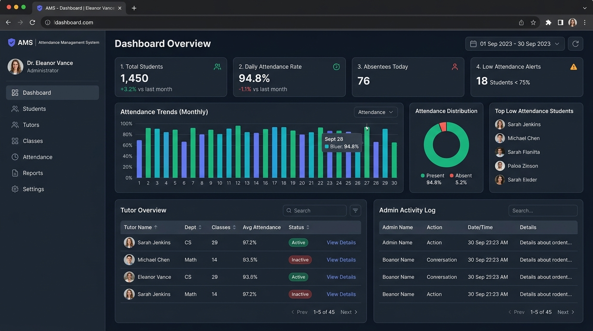

Attendance Management System
A comprehensive institutional tracking application engineered to automate student records, departmental reporting, and multi-tier role authorization.
- Cryptographic Authentication: Designed defensive login flows featuring salted password hashing, stateful session management, and time-sensitive OTP-based verification.
-
Automated Spreadsheet Ingestion & Reports: Built automated data pipelines using
PandasandOpenPyxlto ingest batch CSV rosters and output institutional attendance audits. - Dynamic Administrative Portals: Architected separated Admin and Tutor dashboard experiences with real-time class attendance rate computation and threshold warnings.
-
Production Reliability: Configured automated SMTP-based email alerts for low-attendance thresholds and deployed the WSGI service using
Gunicorn.
Python
Flask
MySQL
Gunicorn
Pandas
OpenPyxl
OTP / SMTP
Bootstrap
